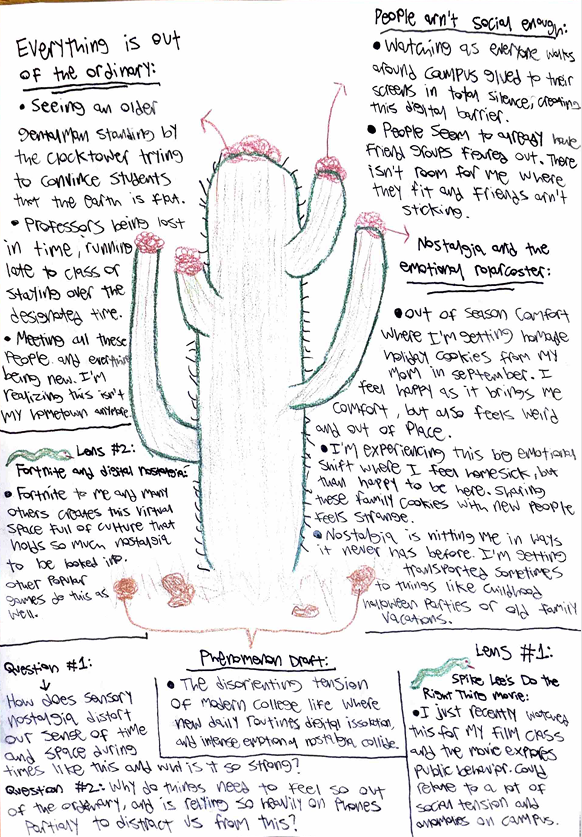

Unit 1

Blog:
The phenomenon I currently have, which I plan to use for this project, is about the disorienting tension of modern college life, specifically the adjustment where new daily routines, digital isolation, and intense emotional nostalgia are colliding. This topic drew me in the most over any other ideas I had because I believe searching for answers and looking into this will help me emotionally. Since this issue with adjustment has been so prominent at this stage of my life, the idea of how nostalgia plays into the college transitional experience feels really unique. This part in particular drew me to this phenomenon because I’ve been feeling so much nostalgia recently in many ways.
A lot of my recent lived experiences have shaped my current understanding of this phenomenon. When looking directly at daily campus life, I've noticed that strange real-world moments and digital isolation exist side by side. On one hand, everything feels surreal and out of the ordinary, such as the old flat-earther by the clock tower trying to convince passing students that the Earth is flat, or professors losing track of time and staying past the bell. Even with all of these unique shared experiences happening, I've noticed so many students just ignoring things and staring at their phones in complete silence. Something else for me is that nostalgia hits in unexpected ways, like receiving homemade cookies from my mom.
Looking at these patterns gave me questions about why nostalgia and digital reliance feel so strong right now. How does nostalgia distort our sense of time and space during major life transitions, and why is it so strong? Also, why do some campus moments feel so out of the ordinary, and are we relying so heavily on our phones partially to distract ourselves from that discomfort? I might be assuming that everyone hiding behind their screens is just avoiding interaction, but it is possible many people are using it, freshmen especially, to help with this transition.
To examine this phenomenon through popular culture, I have so far selected two of three distinct artifacts: Spike Lee’s film Do the Right Thing and the video game Fortnite. While Do the Right Thing provides a great lens for analyzing public behavior and social tensions that can relate to what I’ve seen on campus, Fortnite serves as my primary lens for digital nostalgia. Fortnite, similar to other video games, functions almost as a digital safe space for many people in my generation, building shared cultural memories through massive virtual events like the 2020 Travis Scott in-game concert. Today, the game actively feeds that nostalgia by bringing back its "OG" mode, recreating the exact world from years ago. Logging on to play that mode with my brother creates an immediate bridge back to the simplicity of being younger and carefree. In an unfamiliar college environment, Fortnite acts as a digital space where we can actively relive the past, even if it isn’t the exact same anymore.
So far, my XY thesis statement is that while it is likely that young adults use screen time to escape the stress of an unfamiliar college environment, it is also possible that these virtual spaces preserve people's shared connections during these life shifts, making them actually more essential than we think.